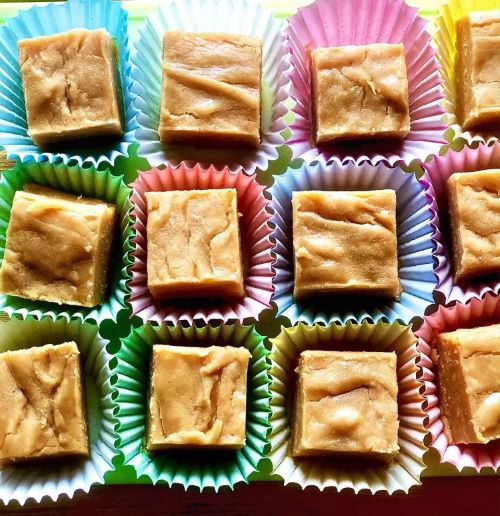

Peanut Butter Fudge with Condensed Milk

Descrption
This is a fantastic version of an Italian classic. The feta cheese adds a rich flavor that brings this dish to life. Incredibly easy and incredibly delicious!
Ingredients
- ½ cup butter.
- 2 (10 ounce) packages peanut butter chips.
- 1 (14 ounce) can sweetened condensed milk.
Steps
- Melt butter in a saucepan over medium heat. Pour in condensed milk. Pour in peanut butter chips. Stir until blended.
- Pour into a parchment-lined 9x9-inch pan. Let cool, 30 minutes to 1 hour. Cut into pieces and serve.
Source:Allrecipes